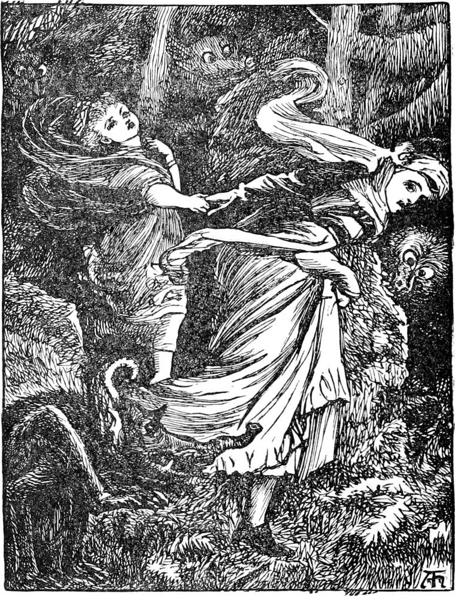
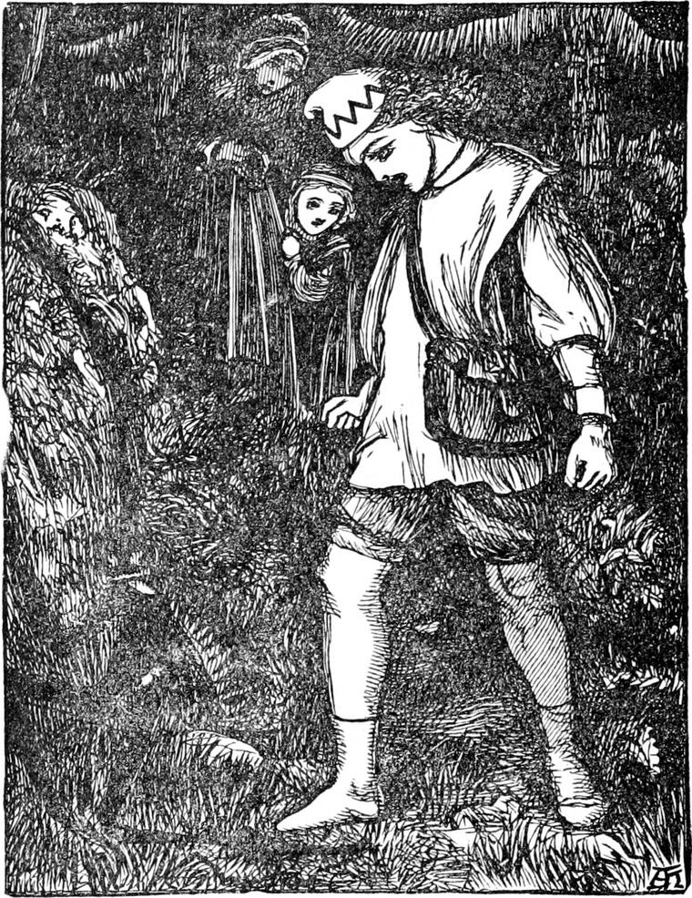
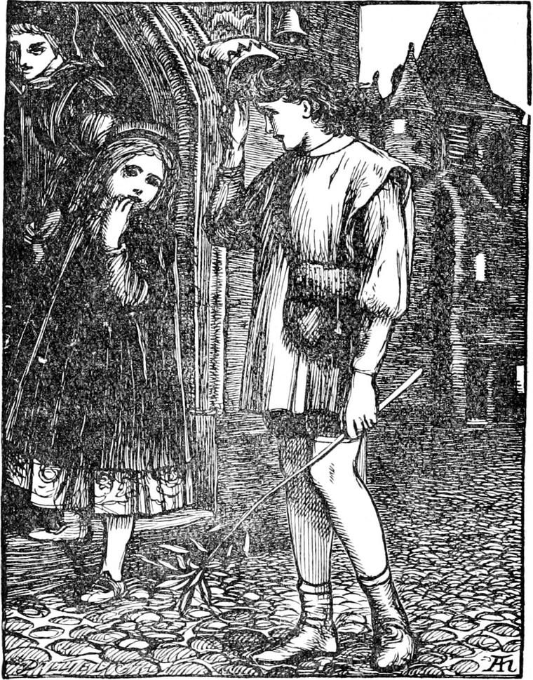

The next day the great cloud still hung over the mountain, and the rain poured like water from a full sponge. The princess was very fond of being out of doors, and she nearly cried when she saw that the weather was no better. But the mist was not of such a dark dingy grey; there was light in it; and as the hours went on it grew brighter and brighter, until it was almost too brilliant to look at; and late in the afternoon the sun broke out so gloriously that Irene clapped her hands, crying:
'See, see, Lootie! The sun has had his face washed. Look how bright he is! Do get my hat, and let us go out for a walk. Oh, dear! oh, dear! how happy I am!'
Lootie was very glad to please the princess. She got her hat and cloak, and they set out together for a walk up the mountain; for the road was so hard and steep that the water could not rest upon it, and it was always dry enough for walking a few minutes after the rain ceased. The clouds were rolling away in broken pieces, like great, overwoolly sheep, whose wool the sun had bleached till it was almost too white for the eyes to bear. Between them the sky shone with a deeper and purer blue, because of the rain. The trees on the roadside were hung all over with drops, which sparkled in the sun like jewels. The only things that were no brighter for the rain were the brooks that ran down the mountain; they had changed from the clearness of crystal to a muddy brown; but what they lost in colour they gained in sound—or at least in noise, for a brook when it is swollen is not so musical as before. But Irene was in raptures with the great brown streams tumbling down everywhere; and Lootie shared in her delight, for she too had been confined to the house for three days.
At length she observed that the sun was getting low, and said it was time to be going back. She made the remark again and again, but, every time, the princess begged her to go on just a little farther and a little farther; reminding her that it was much easier to go downhill, and saying that when they did turn they would be at home in a moment. So on and on they did go, now to look at a group of ferns over whose tops a stream was pouring in a watery arch, now to pick a shining stone from a rock by the wayside, now to watch the flight of some bird. Suddenly the shadow of a great mountain peak came up from behind, and shot in front of them. When the nurse saw it, she started and shook, and catching hold of the princess's hand turned and began to run down the hill.
'What's all the haste, nursie?' asked Irene, running alongside of her.
'We must not be out a moment longer.'
'But we can't help being out a good many moments longer.'
It was too true. The nurse almost cried. They were much too far from home. It was against express orders to be out with the princess one moment after the sun was down; and they were nearly a mile up the mountain! If His Majesty, Irene's papa, were to hear of it, Lootie would certainly be dismissed; and to leave the princess would break her heart. It was no wonder she ran. But Irene was not in the least frightened, not knowing anything to be frightened at. She kept on chattering as well as she could, but it was not easy.

'Lootie! Lootie! why do you run so fast? It shakes my teeth when I talk.'
'Then don't talk,' said Lootie.
'But the princess went on talking. She was always saying: 'Look, look, Lootie!' but Lootie paid no more heed to anything she said, only ran on.
'Look, look, Lootie! Don't you see that funny man peeping over the rock?'
Lootie only ran the faster. They had to pass the rock, and when they came nearer, the princess saw it was only a lump of the rock itself that she had taken for a man.
'Look, look, Lootie! There's such a curious creature at the foot of that old tree. Look at it, Lootie! It's making faces at us, I do think.'
Lootie gave a stifled cry, and ran faster still—so fast that Irene's little legs could not keep up with her, and she fell with a crash. It was a hard downhill road, and she had been running very fast—so it was no wonder she began to cry. This put the nurse nearly beside herself; but all she could do was to run on, the moment she got the princess on her feet again.
'Who's that laughing at me?' said the princess, trying to keep in her sobs, and running too fast for her grazed knees.
'Nobody, child,' said the nurse, almost angrily.
But that instant there came a burst of coarse tittering from somewhere near, and a hoarse indistinct voice that seemed to say: 'Lies! lies! lies!'

'Oh!' cried the nurse with a sigh that was almost a scream, and ran on faster than ever.
'Nursie! Lootie! I can't run any more. Do let us walk a bit.'
'What am I to do?' said the nurse. 'Here, I will carry you.'
She caught her up; but found her much too heavy to run with, and had to set her down again. Then she looked wildly about her, gave a great cry, and said:
'We've taken the wrong turning somewhere, and I don't know where we are. We are lost, lost!'
The terror she was in had quite bewildered her. It was true enough they had lost the way. They had been running down into a little valley in which there was no house to be seen.
Now Irene did not know what good reason there was for her nurse's terror, for the servants had all strict orders never to mention the goblins to her, but it was very discomposing to see her nurse in such a fright. Before, however, she had time to grow thoroughly alarmed like her, she heard the sound of whistling, and that revived her. Presently she saw a boy coming up the road from the valley to meet them. He was the whistler; but before they met his whistling changed to singing. And this is something like what he sang:
Go the hammers' clang!
Hit and turn and bore!
Whizz and puff and roar!
Thus we rive the rocks,
Force the goblin locks.—
See the shining ore!
One, two, three—
Bright as gold can be!
Four, five, six—
Shovels, mattocks, picks!
Seven, eight, nine—
Light your lamp at mine.
Ten, eleven, twelve—
Loosely hold the helve.
We're the merry miner-boys,
Make the goblins hold their noise.'
'I wish YOU would hold your noise,' said the nurse rudely, for the very word GOBLIN at such a time and in such a place made her tremble. It would bring the goblins upon them to a certainty, she thought, to defy them in that way. But whether the boy heard her or not, he did not stop his singing.
This is worth the siftin';
Sixteen, seventeen, eighteen—
There's the match, and lay't in.
Nineteen, twenty—
Goblins in a plenty.'
'Do be quiet,' cried the nurse, in a whispered shriek. But the boy, who was now close at hand, still went on.
There you go in a hurry!
Gobble! gobble! goblin!
There you go a wobblin';
Hobble, hobble, hobblin'—
Cobble! cobble! cobblin'!
Hob-bob-goblin!—
Huuuuuh!'
'There!' said the boy, as he stood still opposite them. 'There! that'll do for them. They can't bear singing, and they can't stand that song. They can't sing themselves, for they have no more voice than a crow; and they don't like other people to sing.'
The boy was dressed in a miner's dress, with a curious cap on his head. He was a very nice-looking boy, with eyes as dark as the mines in which he worked and as sparkling as the crystals in their rocks. He was about twelve years old. His face was almost too pale for beauty, which came of his being so little in the open air and the sunlight—for even vegetables grown in the dark are white; but he looked happy, merry indeed—perhaps at the thought of having routed the goblins; and his bearing as he stood before them had nothing clownish or rude about it.
'I saw them,' he went on, 'as I came up; and I'm very glad I did. I knew they were after somebody, but I couldn't see who it was. They won't touch you so long as I'm with you.'
'Why, who are you?' asked the nurse, offended at the freedom with which he spoke to them.
'I'm Peter's son.'
'Who's Peter?'
'Peter the miner.'
'I don't know him.'
'I'm his son, though.'
'And why should the goblins mind you, pray?'
'Because I don't mind them. I'm used to them.'
'What difference does that make?'
'If you're not afraid of them, they're afraid of you. I'm not afraid of them. That's all. But it's all that's wanted—up here, that is. It's a different thing down there. They won't always mind that song even, down there. And if anyone sings it, they stand grinning at him awfully; and if he gets frightened, and misses a word, or says a wrong one, they—oh! don't they give it him!'
'What do they do to him?' asked Irene, with a trembling voice.
'Don't go frightening the princess,' said the nurse.
'The princess!' repeated the little miner, taking off his curious cap. 'I beg your pardon; but you oughtn't to be out so late. Everybody knows that's against the law.'
'Yes, indeed it is!' said the nurse, beginning to cry again. 'And I shall have to suffer for it.'
'What does that matter?' said the boy. 'It must be your fault. It is the princess who will suffer for it. I hope they didn't hear you call her the princess. If they did, they're sure to know her again: they're awfully sharp.'
'Lootie! Lootie!' cried the princess. 'Take me home.'
'Don't go on like that,' said the nurse to the boy, almost fiercely. 'How could I help it? I lost my way.'
'You shouldn't have been out so late. You wouldn't have lost your way if you hadn't been frightened,' said the boy. 'Come along. I'll soon set you right again. Shall I carry your little Highness?'
'Impertinence!' murmured the nurse, but she did not say it aloud, for she thought if she made him angry he might take his revenge by telling someone belonging to the house, and then it would be sure to come to the king's ears. 'No, thank you,' said Irene. 'I can walk very well, though I can't run so fast as nursie. If you will give me one hand, Lootie will give me another, and then I shall get on famously.'
They soon had her between them, holding a hand of each.
'Now let's run,' said the nurse.
'No, no!' said the little miner. 'That's the worst thing you can do. If you hadn't run before, you would not have lost your way. And if you run now, they will be after you in a moment.'
'I don't want to run,' said Irene.
'You don't think of me,' said the nurse.
'Yes, I do, Lootie. The boy says they won't touch us if we don't run.'
'Yes, but if they know at the house that I've kept you out so late I shall be turned away, and that would break my heart.'
'Turned away, Lootie! Who would turn you away?'
'Your papa, child.'
'But I'll tell him it was all my fault. And you know it was, Lootie.'
'He won't mind that. I'm sure he won't.'
'Then I'll cry, and go down on my knees to him, and beg him not to take away my own dear Lootie.'
The nurse was comforted at hearing this, and said no more. They went on, walking pretty fast, but taking care not to run a step.
'I want to talk to you,' said Irene to the little miner; 'but it's so awkward! I don't know your name.'
'My name's Curdie, little princess.'
'What a funny name! Curdie! What more?'
'Curdie Peterson. What's your name, please?'
'Irene.'
'What more?'
'I don't know what more. What more is my name, Lootie?'
'Princesses haven't got more than one name. They don't want it.'
'Oh, then, Curdie, you must call me just Irene and no more.'
'No, indeed,' said the nurse indignantly. 'He shall do no such thing.'
'What shall he call me, then, Lootie?'
'Your Royal Highness.'
'My Royal Highness! What's that? No, no, Lootie. I won't be called names. I don't like them. You told me once yourself it's only rude children that call names; and I'm sure Curdie wouldn't be rude. Curdie, my name's Irene.'
'Well, Irene,' said Curdie, with a glance at the nurse which showed he enjoyed teasing her; 'it is very kind of you to let me call you anything. I like your name very much.'
He expected the nurse to interfere again; but he soon saw that she was too frightened to speak. She was staring at something a few yards before them in the middle of the path, where it narrowed between rocks so that only one could pass at a time.
'It is very much kinder of you to go out of your way to take us home,' said Irene.
'I'm not going out of my way yet,' said Curdie. 'It's on the other side of those rocks the path turns off to my father's.'
'You wouldn't think of leaving us till we're safe home, I'm sure,' gasped the nurse.
'Of course not,' said Curdie.
'You dear, good, kind Curdie! I'll give you a kiss when we get home,' said the princess.
The nurse gave her a great pull by the hand she held. But at that instant the something in the middle of the way, which had looked like a great lump of earth brought down by the rain, began to move. One after another it shot out four long things, like two arms and two legs, but it was now too dark to tell what they were. The nurse began to tremble from head to foot. Irene clasped Curdie's hand yet faster, and Curdie began to sing again:
Hit and hew!
Three, four—
Blast and bore!
Five, six—
There's a fix!
Seven, eight—
Hold it straight!
Nine, ten—
Hit again!
Hurry! scurry!
Bother! smother!
There's a toad
In the road!
Smash it!
Squash it!
Fry it!
Dry it!
You're another!
Up and off!
There's enough!—
Huuuuuh!'
As he uttered the last words, Curdie let go his hold of his companion, and rushed at the thing in the road as if he would trample it under his feet. It gave a great spring, and ran straight up one of the rocks like a huge spider. Curdie turned back laughing, and took Irene's hand again. She grasped his very tight, but said nothing till they had passed the rocks. A few yards more and she found herself on a part of the road she knew, and was able to speak again.
'Do you know, Curdie, I don't quite like your song: it sounds to me rather rude,' she said.
'Well, perhaps it is,' answered Curdie. 'I never thought of that; it's a way we have. We do it because they don't like it.'
'Who don't like it?'
'The cobs, as we call them.'
'Don't!' said the nurse.
'Why not?' said Curdie.
'I beg you won't. Please don't.'
'Oh! if you ask me that way, of course, I won't; though I don't a bit know why. Look! there are the lights of your great house down below. You'll be at home in five minutes now.'
Nothing more happened. They reached home in safety. Nobody had missed them, or even known they had gone out; and they arrived at the door belonging to their part of the house without anyone seeing them. The nurse was rushing in with a hurried and not over-gracious good night to Curdie; but the princess pulled her hand from hers, and was just throwing her arms round Curdie's neck, when she caught her again and dragged her away.
'Lootie! Lootie! I promised a kiss,' cried Irene.
'A princess mustn't give kisses. It's not at all proper,' said Lootie.
'But I promised,' said the princess.
'There's no occasion; he's only a miner-boy.'
'He's a good boy, and a brave boy, and he has been very kind to us. Lootie! Lootie! I promised.'

'Then you shouldn't have promised.'
'Lootie, I promised him a kiss.'
'Your Royal Highness,' said Lootie, suddenly grown very respectful, 'must come in directly.'
'Nurse, a princess must not break her word,' said Irene, drawing herself up and standing stock-still.
Lootie did not know which the king might count the worst—to let the princess be out after sunset, or to let her kiss a miner-boy. She did not know that, being a gentleman, as many kings have been, he would have counted neither of them the worse. However much he might have disliked his daughter to kiss the miner-boy, he would not have had her break her word for all the goblins in creation. But, as I say, the nurse was not lady enough to understand this, and so she was in a great difficulty, for, if she insisted, someone might hear the princess cry and run to see, and then all would come out. But here Curdie came again to the rescue.
'Never mind, Princess Irene,' he said. 'You mustn't kiss me tonight. But you shan't break your word. I will come another time. You may be sure I will.'
'Oh, thank you, Curdie!' said the princess, and stopped crying.
'Good night, Irene; good night, Lootie,' said Curdie, and turned and was out of sight in a moment.
'I should like to see him!' muttered the nurse, as she carried the princess to the nursery.
'You will see him,' said Irene. 'You may be sure Curdie will keep his word. He's sure to come again.'
'I should like to see him!' repeated the nurse, and said no more. She did not want to open a new cause of strife with the princess by saying more plainly what she meant. Glad enough that she had succeeded both in getting home unseen, and in keeping the princess from kissing the miner's boy, she resolved to watch her far better in future. Her carelessness had already doubled the danger she was in. Formerly the goblins were her only fear; now she had to protect her charge from Curdie as well.